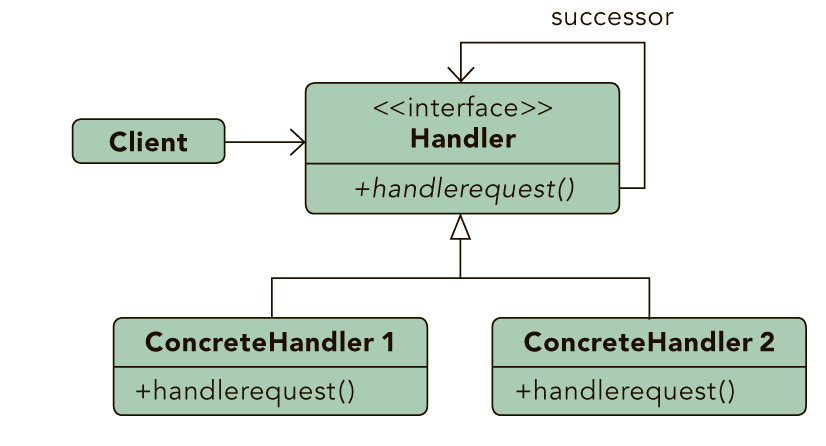

|
Design Patterns |
| By: Jason McDonald |
ABOUT DESIGN PATTERNS
This Design Patterns refcard provides a quick reference to the original 23 Gang of Four design patterns, as listed in the book Design Patterns: Elements of Reusable Object-Oriented Software. Each pattern includes class diagrams, explanation, usage information, and a real world example.
- Creational Patterns:Used to construct objects such that they can be decoupled from their implementing system.
- Structural Patterns:Used to form large object structures between many disparate objects.
- Behavioral Patterns:Used to manage algorithms, relationships, and responsibilities between objects.
Object Scope:Deals with object relationships that can be changed at runtime.
Class Scope:Deals with class relationships that can be changed at compile time.
- Abstract Factory
- Adapter
- Bridge
- Builder
- Chain of Responsibility
- Command
- Composite
- Decorator
- Facade
- Factory Method
- Flyweight
- Interpreter
- Iterator
- Mediator
- Memento
- Prototype
- Proxy
- Observer
- Singleton
- State
- Strategy
- Template Method
- Visitor
CHAIN OF RESPONSIBILITY

Purpose
Gives more than one object an opportunity to handle a request by linking receiving objects together.
- Use When
- Multiple objects may handle a request and the handler doesn't have to be a specific object.
- A set of objects should be able to handle a request with the handler determined at runtime.
- A request not being handled is an acceptable potential outcome.
Example
Exception handling in some languages implements this pattern. When an exception is thrown in a method the runtime checks to see if the method has a mechanism to handle the exception or if it should be passed up the call stack. When passed up the call stack the process repeats until code to handle the exception is encountered or until there are no more parent objects to hand the request to.
COMMAND

Purpose
Encapsulates a request allowing it to be treated as an object. This allows the request to be handled in traditionally object based relationships such as queuing and callbacks.
- Use When
- You need callback functionality.
- Requests need to be handled at variant times or in variant orders.
- A history of requests is needed.
- The invoker should be decoupled from the object handling the invocation.
Example
Job queues are widely used to facilitate the asynchronous processing of algorithms. By utilizing the command pattern the functionality to be executed can be given to a job queue for processing without any need for the queue to have knowledge of the actual implementation it is invoking. The command object that is enqueued implements its particular algorithm within the confines of the interface the queue is expecting.
INTERPRETER

Purpose
Defines a representation for a grammar as well as a mechanism to understand and act upon the grammar.
- Use When
- There is grammar to interpret that can be represented as large syntax trees.
- The grammar is simple.
- Efficiency is not important.
- Decoupling grammar from underlying expressions is desired.
Example
Text based adventures, wildly popular in the 1980's, provide a good example of this. Many had simple commands, such as "step down" that allowed traversal of the game. These commands could be nested such that it altered their meaning. For example, "go in" would result in a different outcome than "go up". By creating a hierarchy of commands based upon the command and the qualifier (non-terminal and terminal expressions) the application could easily map many command variations to a relating tree of actions.
ITERATOR

Purpose
Allows for access to the elements of an aggregate object without allowing access to its underlying representation.
- Use When
- Access to elements is needed without access to the entire representation.
- Multiple or concurrent traversals of the elements are needed.
- A uniform interface for traversal is needed.
- Subtle differences exist between the implementation details of various iterators.
Example
The Java implementation of the iterator pattern allows users to traverse various types of data sets without worrying about the underlying implementation of the collection. Since clients simply interact with the iterator interface, collections are left to define the appropriate iterator for themselves. Some will allow full access to the underlying data set while others may restrict certain functionalities, such as removing items.
MEDIATOR

Purpose
Allows loose coupling by encapsulating the way disparate sets of objects interact and communicate with each other. Allows for the actions of each object set to vary independently of one another.
Allows loose coupling by encapsulating the way disparate sets of objects interact and communicate with each other. Allows for the actions of each object set to vary independently of one another.
- Use When
- Communication between sets of objects is well defined and complex.
- Too many relationships exist and common point of control or communication is needed.
Example
Mailing list software keeps track of who is signed up to the mailing list and provides a single point of access through which any one person can communicate with the entire list. Without a mediator implementation a person wanting to send a message to the group would have to constantly keep track of who was signed up and who was not. By implementing the mediator pattern the system is able to receive messages from any point then determine which recipients to forward the message on to, without the sender of the message having to be concerned with the actual recipient list.
MEMENTO

Purpose
Allows for capturing and externalizing an object's internal state so that it can be restored later, all without violating encapsulation.
- Use When
- The internal state of an object must be saved and restored at a later time.
- Internal state cannot be exposed by interfaces without exposing implementation.
- Encapsulation boundaries must be preserved.
Example
Undo functionality can nicely be implemented using the memento pattern. By serializing and deserializing the state of an object before the change occurs we can preserve a snapshot of it that can later be restored should the user choose to undo the operation.
OBSERVER

Purpose
Lets one or more objects be notified of state changes in other objects within the system.
- Use When
- State changes in one or more objects should trigger behavior in other objects
- Broadcasting capabilities are required.
- An understanding exists that objects will be blind to the expense of notification.
Example
This pattern can be found in almost every GUI environment. When buttons, text, and other fields are placed in applications the application typically registers as a listener for those controls. When a user triggers an event, such as clicking a button, the control iterates through its registered observers and sends a notification to each.
STATE

Purpose
Ties object circumstances to its behavior, allowing the object to behave in different ways based upon its internal state.
- Use When
- The behavior of an object should be influenced by its state.
- Complex conditions tie object behavior to its state.
- Transitions between states need to be explicit.
Example
An email object can have various states, all of which will change how the object handles different functions. If the state is "not sent" then the call to send() is going to send the message while a call to recallMessage() will either throw an error or do nothing. However, if the state is "sent" then the call to send() would either throw an error or do nothing while the call to recallMessage() would attempt to send a recall notification to recipients. To avoid conditional statements in most or all methods there would be multiple state objects that handle the implementation with respect to their particular state. The calls within the Email object would then be delegated down to the appropriate state object for handling.
STRATEGY

Purpose
Defines a set of encapsulated algorithms that can be swapped to carry out a specific behavior.
- Use When
- The only difference between many related classes is their behavior.
- Multiple versions or variations of an algorithm are required.
- Algorithms access or utilize data that calling code shouldn't be exposed to.
- The behavior of a class should be defined at runtime.
- Conditional statements are complex and hard to maintain.
Example
When importing data into a new system different validation algorithms may be run based on the data set. By configuring the import to utilize strategies the conditional logic to determine what validation set to run can be removed and the import can be decoupled from the actual validation code. This will allow us to dynamically call one or more strategies during the import.
TEMPLATE METHOD

Purpose
Identifies the framework of an algorithm, allowing implementing classes to define the actual behavior.
- Use When
- A single abstract implementation of an algorithm is needed.
- Common behavior among subclasses should be localized to a common class.
- Parent classes should be able to uniformly invoke behavior in their subclasses.
- Most or all subclasses need to implement the behavior.
Example
A parent class, InstantMessage, will likely have all the methods required to handle sending a message. However, the actual serialization of the data to send may vary depending on the implementation. A video message and a plain text message will require different algorithms in order to serialize the data correctly. Subclasses of InstantMessage can provide their own implementation of the serialization method, allowing the parent class to work with them without understanding their implementation details.
VISITOR

Purpose
Allows for one or more operations to be applied to a set of objects at runtime, decoupling the operations from the object structure.
- Use When
- An object structure must have many unrelated operations performed upon it.
- The object structure can't change but operations performed on it can.
- Operations must be performed on the concrete classes of an object structure.
- Exposing internal state or operations of the object structure is acceptable.
- Operations should be able to operate on multiple object structures that implement the same interface sets.
Example
Calculating taxes in different regions on sets of invoices would require many different variations of calculation logic. Implementing a visitor allows the logic to be decoupled from the invoices and line items. This allows the hierarchy of items to be visited by calculation code that can then apply the proper rates for the region. Changing regions is as simple as substituting a different visitor.
ADAPTER

Purpose
Permits classes with disparate interfaces to work together by creating a common object by which they may communicate and interact.
- Use When
- A class to be used doesn't meet interface requirements.
- Complex conditions tie object behavior to its state.
- Transitions between states need to be explicit.
Example
A billing application needs to interface with an HR application in order to exchange employee data, however each has its own interface and implementation for the Employee object. In addition, the SSN is stored in different formats by each system. By creating an adapter we can create a common interface between the two applications that allows them to communicate using their native objects and is able to transform the SSN format in the process.
BRIDGE

Purpose
Defines an abstract object structure independently of the implementation object structure in order to limit coupling.
- Use When
- Abstractions and implementations should not be bound at compile time.
- Abstractions and implementations should be independently extensible.
- Changes in the implementation of an abstraction should have no impact on clients.
- Implementation details should be hidden from the client.
Example
The Java Virtual Machine (JVM) has its own native set of functions that abstract the use of windowing, system logging, and byte code execution but the actual implementation of these functions is delegated to the operating system the JVM is running on. When an application instructs the JVM to render a window it delegates the rendering call to the concrete implementation of the JVM that knows how to communicate with the operating system in order to render the window.
COMPOSITE

Purpose
Facilitates the creation of object hierarchies where each object can be treated independently or as a set of nested objects through the same interface.
- Use When
- Hierarchical representations of objects are needed..
- Objects and compositions of objects should be treated uniformly.
Example
Sometimes the information displayed in a shopping cart is the product of a single item while other times it is an aggregation of multiple items. By implementing items as composites we can treat the aggregates and the items in the same way, allowing us to simply iterate over the tree and invoke functionality on each item. By calling the getCost() method on any given node we would get the cost of that item plus the cost of all child items, allowing items to be uniformly treated whether they were single items or groups of items.
DECORATOR

Purpose
Allows for the dynamic wrapping of objects in order to modify their existing responsibilities and behaviors.
- Use When
- Object responsibilities and behaviors should be dynamically modifiable.
- Concrete implementations should be decoupled from responsibilities and behaviors.
- Subclassing to achieve modification is impractical or impossible.
- Specific functionality should not reside high in the object hierarchy.
- A lot of little objects surrounding a concrete implementation is acceptable.
Example
Many businesses set up their mail systems to take advantage of decorators. When messages are sent from someone in the company to an external address the mail server decorates the original message with copyright and confidentiality information. As long as the message remains internal the information is not attached. This decoration allows the message itself to remain unchanged until a runtime decision is made to wrap the message with additional information.
FACADE

Purpose
Supplies a single interface to a set of interfaces within a system.
- Use When
- A simple interface is needed to provide access to a complex system.
- There are many dependencies between system implementations and clients.
- Systems and subsystems should be layered.
Example
By exposing a set of functionalities through a web service the client code needs to only worry about the simple interface being exposed to them and not the complex relationships that may or may not exist behind the web service layer. A single web service call to update a system with new data may actually involve communication with a number of databases and systems, however this detail is hidden due to the implementation of the fa?ade pattern.
FLYWEIGHT

Purpose
Facilitates the reuse of many fine grained objects, making the utilization of large numbers of objects more efficient.
- Use When
- Many like objects are used and storage cost is high.
- The majority of each object's state can be made extrinsic.
- A few shared objects can replace many unshared ones.
- The identity of each object does not matter.
Example
Systems that allow users to define their own application flows and layouts often have a need to keep track of large numbers of fields, pages, and other items that are almost identical to each other. By making these items into flyweights all instances of each object can share the intrinsic state while keeping the extrinsic state separate. The intrinsic state would store the shared properties, such as how a textbox looks, how much data it can hold, and what events it exposes. The extrinsic state would store the unshared properties, such as where the item belongs, how to react to a user click, and how to handle events.
PROXY

Purpose
Allows for object level access control by acting as a pass through entity or a placeholder object.
- Use When
- The object being represented is external to the system.
- Objects need to be created on demand.
- Access control for the original object is required.
- Added functionality is required when an object is accessed.
Example
Ledger applications often provide a way for users to reconcile their bank statements with their ledger data on demand, automating much of the process. The actual operation of communicating with a third party is a relatively expensive operation that should be limited. By using a proxy to represent the communications object we can limit the number of times or the intervals the communication is invoked. In addition, we can wrap the complex instantiation of the communication object inside the proxy class, decoupling calling code from the implementation details.
ABSTRACT FACTORY

Purpose
Provide an interface that delegates creation calls to one or more concrete classes in order to deliver specific objects.
- Use When
- The creation of objects should be independent of the system utilizing them.
- Systems should be capable of using multiple families of objects.
- Families of objects must be used together.
- Libraries must be published without exposing implementation details.
- Concrete classes should be decoupled from clients.
Example
Email editors will allow for editing in multiple formats including plain text, rich text, and HTML. Depending on the format being used, different objects will need to be created. If the message is plain text then there could be a body object that represented just plain text and an attachment object that simply encrypted the attachment into Base64. If the message is HTML then the body object would represent HTML encoded text and the attachment object would allow for inline representation and a standard attachment. By utilizing an abstract factory for creation we can then ensure that the appropriate object sets are created based upon the style of email that is being sent.
BUILDER

Purpose
Allows for the dynamic creation of objects based upon easily interchangeable algorithms.
- Use When
- Object creation algorithms should be decoupled from the system.
- Multiple representations of creation algorithms are required.
- The addition of new creation functionality without changing the core code is necessary.
- Runtime control over the creation process is required.
Example
A file transfer application could possibly use many different protocols to send files and the actual transfer object that will be created will be directly dependent on the chosen protocol. Using a builder we can determine the right builder to use to instantiate the right object. If the setting is FTP then the FTP builder would be used when creating the object.
FACTORY METHOD

Purpose
Exposes a method for creating objects, allowing subclasses to control the actual creation process.
- Use When
- A class will not know what classes it will be required to create.
- n Subclasses may specify what objects should be created.
- Parent classes wish to defer creation to their subclasses.
Example
Many applications have some form of user and group structure for security. When the application needs to create a user it will typically delegate the creation of the user to multiple user implementations. The parent user object will handle most operations for each user but the subclasses will define the factory method that handles the distinctions in the creation of each type of user. A system may have AdminUser and StandardUser objects each of which extend the User object. The AdminUser object may perform some extra tasks to ensure access while the StandardUser may do the same to limit access.
PROTOTYPE

Purpose
Create objects based upon a template of an existing objects through cloning.
- Use When
- Composition, creation, and representation of objects should be decoupled from a system.
- Classes to be created are specified at runtime.
- A limited number of state combinations exist in an object.
- Objects or object structures are required that are identical or closely resemble other existing objects or object structures.
- The initial creation of each object is an expensive operation.
Example
Rates processing engines often require the lookup of many different configuration values, making the initialization of the engine a relatively expensive process. When multiple instances of the engine is needed, say for importing data in a multi-threaded manner, the expense of initializing many engines is high. By utilizing the prototype pattern we can ensure that only a single copy of the engine has to be initialized then simply clone the engine to create a duplicate of the already initialized object. The added benefit of this is that the clones can be streamlined to only include relevant data for their situation.
SINGLETON

Purpose
Ensures that only one instance of a class is allowed within a system.
- Use When
- Exactly one instance of a class is required.
- Controlled access to a single object is necessary.
Example
Most languages provide some sort of system or environment object that allows the language to interact with the native operating system. Since the application is physically running on only one operating system there is only ever a need for a single instance of this system object. The singleton pattern would be implemented by the language runtime to ensure that only a single copy of the system object is created and to ensure only appropriate processes are allowed access to it.